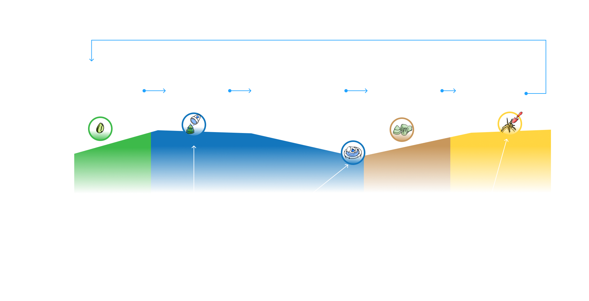
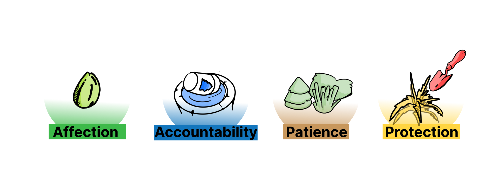
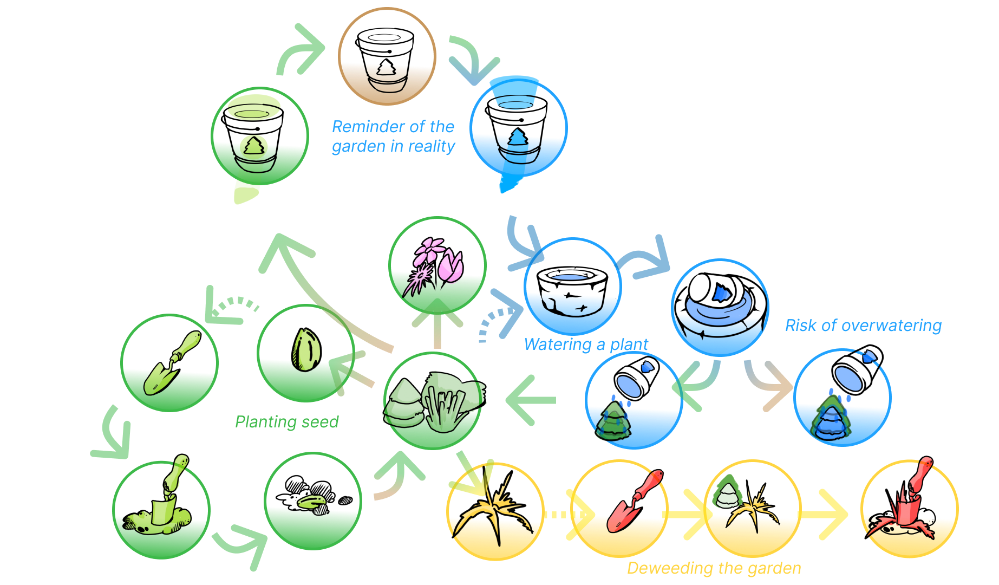
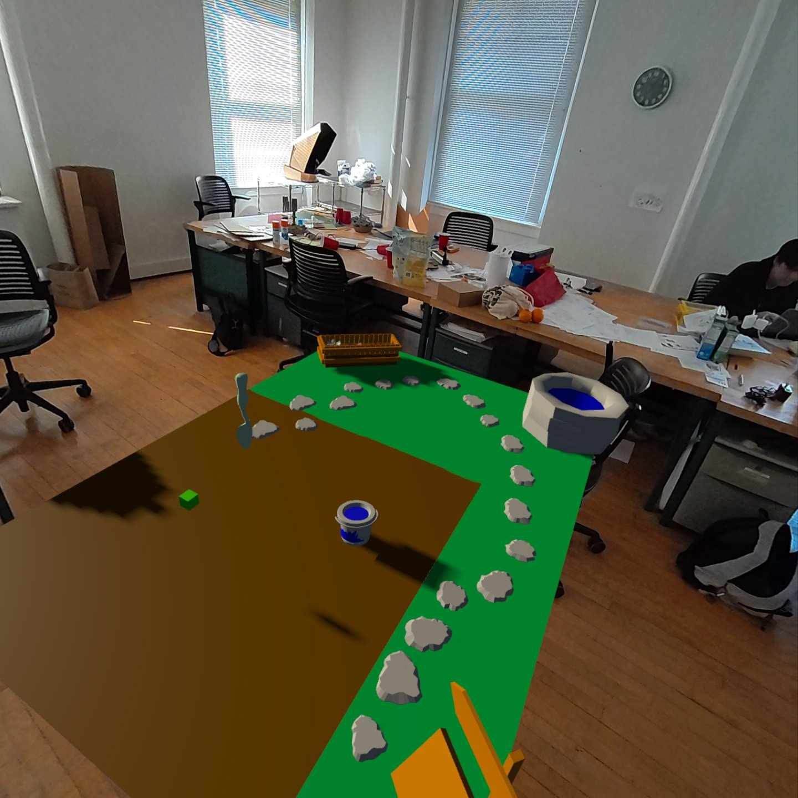
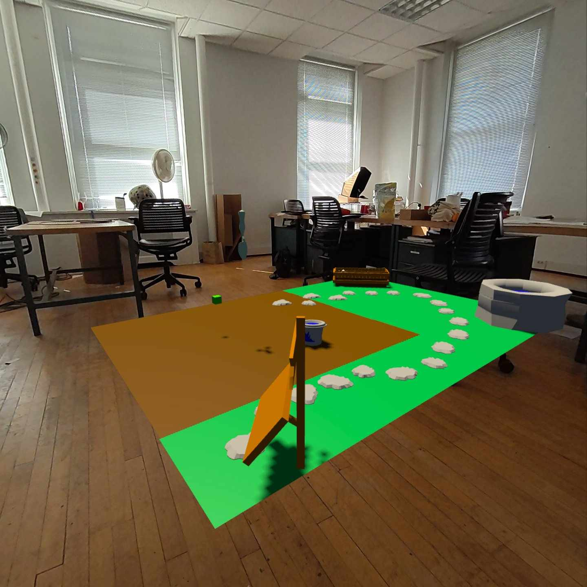
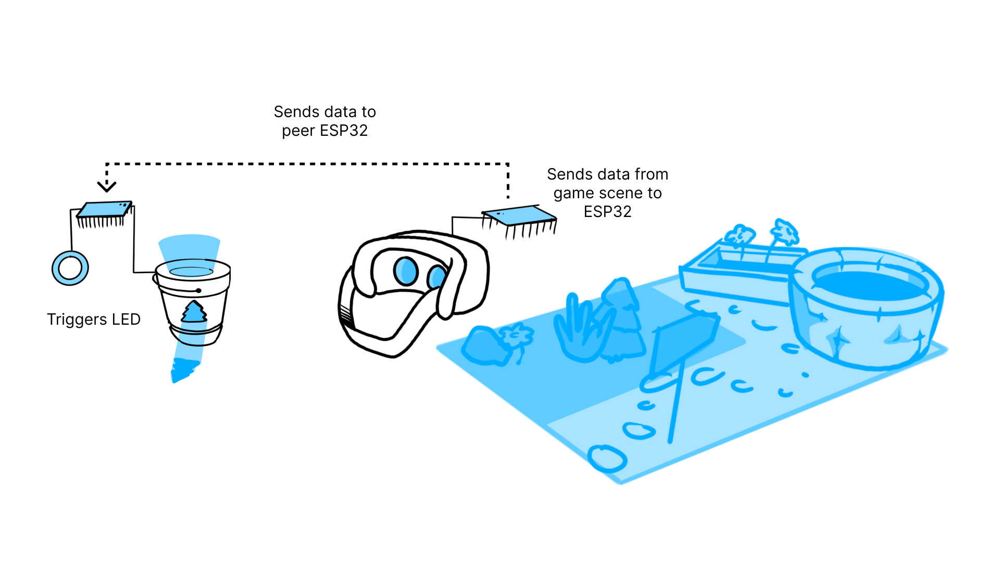
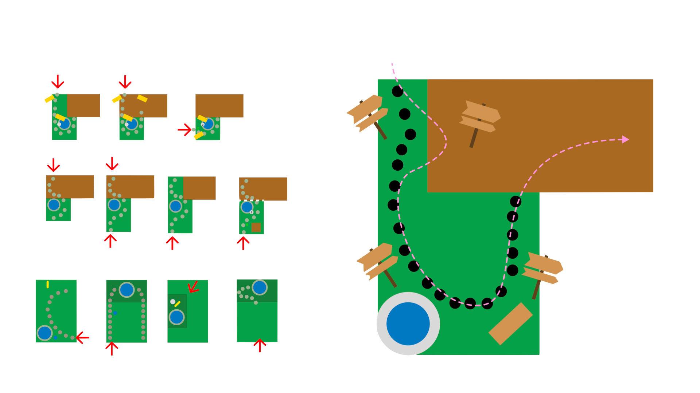
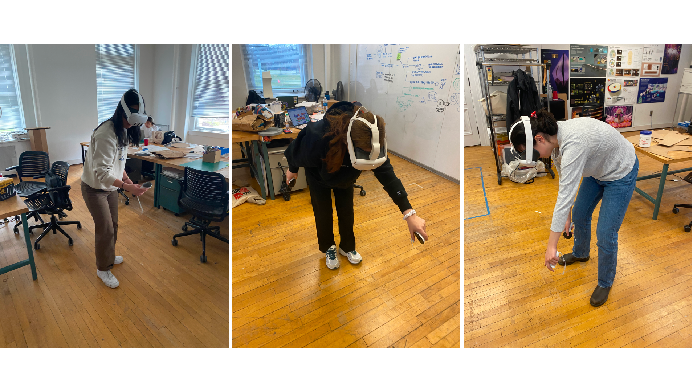

Research Question
What makes people return back to the digital?
With the push towards spatial computing and blending the physical and digital, we hypothesize that people are more likely to return to the digital world with more emotional triggers. This led us to the common web experience of "digital gardens."

Synthesized Values
Finding values that call for nurturing.
Our research led us to four key values within the nurturing experience:
Accountability, Patience, Protection, and Affection. From these, we
began designing a gamified experience that provided opportunities for
building connections between “gardeners” and their digital garden.

Curating the Experience
Designing a Nurture-based gameloop
From the user journey, we created several different interaction points to materialize the nurturing values. Gardeners would engage in the full journeys of their plants, from planting a seed, watering it, protecting it from weeds, and receiving flowers and seeds to restart the process.

Prototyping
Affordances of XR in interaction
From the user journey, we created several different interaction points to materialize the nurturing values. Gardeners would engage in the full journeys of their plants, from planting a seed, watering it, protecting it from weeds, and receiving flowers and seeds to restart the process.


Designing for Physical
Transitioning between Reality and Virtuality
Beyond having the experience in passthrough, we wanted a tangible interface that would fit into the nurture cycle we curated. Our intervention was a timer like bucket that would reflect the cumulative growth of your garden in your space. As more time passes, the light slowly fades, until indicating a desperate need to water your plants.


Level Design
Developing an Onboarding
To make our garden interactions as intuitive and possible, we went through several iterations of a map design that could teach gardeners about the space. Using a stone path, we build an onboarding experience that would teach each interaction of growing a plant as you follow the path through wooden signs, maintaining the integrity of the garden aesthetic.

User Testing
Developing from Playtesting
Throughout every iteration, we began to add more qualities based on playtesting with our peers. This led to a fruitful discussion that helped create gameplay features like shovels, digging, and accessibility featuress like raising the garden, legibility with signs, etc.
